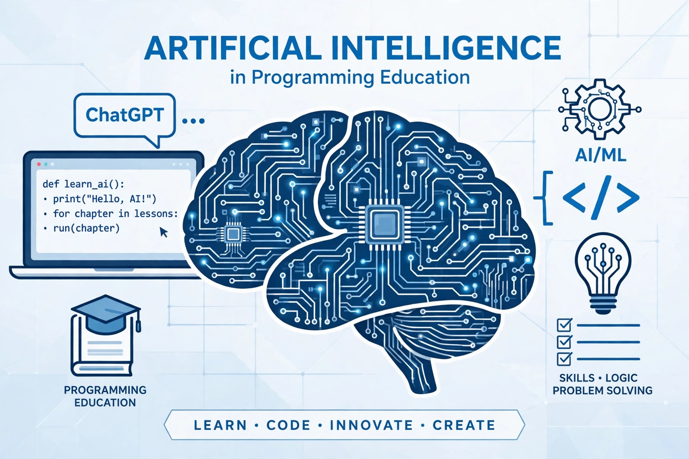

اسم الطالب: اسماء عبدالمنعم شوقي
الكود الجامعي: 2501227
شهد عالم البرمجة ثورة كبيرة بفضل الذكاء الاصطناعي التوليدي. تُعد أدوات مثل ChatGPT من أهم الأدوات التي غيرت طريقة تعلم البرمجة، خاصة للمبتدئين الذين يواجهون صعوبات في فهم الأكواد واكتشاف الأخطاء.

يمكن لـ ChatGPT شرح الكود سطراً بسطر وتوضيح وظيفة كل دالة بأسلوب مبسط.
يتيح الذكاء الاصطناعي لصق الكود الذي يحتوي على خطأ، ليقوم بالتعرف على سبب المشكلة واقتراح الحل فوراً.
| وجه المقارنة | الطريقة التقليدية | باستخدام ChatGPT |
|---|---|---|
| سرعة الإجابة | تستغرق وقتاً في البحث | إجابة فورية خلال ثوانٍ |
| تخصيص الشرح | شرح موحد للجميع | شرح مبسط حسب مستواك |
| تصحيح الأخطاء | بحث ذاتي في المنتديات | يصلح كودك المحدد مباشرة |